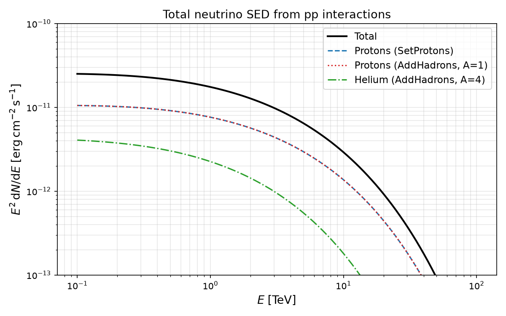

Neutrino Emission
In this tutorial we describe how to compute the neutrino emission from hadronic interactions in GAMERA with the Radiation class. If you are not yet familiar with the basics of the Radiation class, please have a look at the dedicated tutorial.
In the following we assume that fr is an instance of the class Radiation.
The neutrino emission is calculated from inelastic proton-proton (and nucleus-nucleus) collisions, following the same approach as for the pi0 decay gamma-ray emission. It makes use of the parametrisations in Kelner et al. 2006. A full working script calculating neutrinos can be found here.
Defining the cosmic ray spectra and the ambient medium
As a first step, the parent particle spectra and the ambient medium
need to be defined. Protons can be set via SetProtons(), while heavier hadronic species can be added with
AddHadrons(). The calculation of neutrinos works for arbitrary hadronic cosmic ray species and ambient medium compositions.
For a detailed description of how to set up arbitrary hadronic species and arbitrary medium compositions,
please have a look at the tutorial about arbitrary cosmic ray species.
fr = gp.Radiation()
evalues = np.logspace(-4,15, 500)*gp.TeV_to_erg
e_cut = 60.*gp.TeV_to_erg
dn_dE_proton = evalues**(-2)*np.exp(-evalues/e_cut)
fr.SetProtons(list(zip(evalues, dn_dE_proton)))
e_cut_HE = e_cut * 2
dn_dE_HE = evalues**(-2)*np.exp(-evalues/e_cut_HE)
fr.AddHadrons(list(zip(evalues, dn_dE_proton)), 1.0) # A = 1 (protons)
fr.AddHadrons(list(zip(evalues, dn_dE_HE)), 4.0) # A = 4 (helium)
fr.SetAmbientDensity(1.)
Calculating the neutrino spectrum
Once the particle spectra and the ambient medium are defined, the neutrino emission is computed by calling:
E = np.logspace(-1, 2, 100) * gp.TeV_to_erg # energy points in erg
fr.CalculateNeutrinoSpectrum(E)
where E is a list or numpy array of energy points in erg at which the neutrino spectrum will be evaluated.
Retrieving the neutrino emission
After the calculation, the total neutrino emission can be retrieved as an SED (E² dN/dE vs E):
total_neutrino_SED = fr.GetNeutrinoSED() # total neutrino SED (all species combined)
This corresponds to the total amount of neutrinos, irrespective of their flavour. Therefore, if one is only interested in, for example, the muon-neutrino SED, the total SED needs to be divided by a factor of 3, assuming full neutrino mixing.
It is also possible to retrieve the contributions from protons set via SetProtons() and from each hadronic species
added via AddHadrons() individually:
proton_neutrino_SED = fr.GetProtonNeutrinoSED() # contribution from SetProtons()
hadron_neutrino_SED_0 = fr.GetHadronNeutrinoSED(0) # contribution from the 1st AddHadrons() species
hadron_neutrino_SED_1 = fr.GetHadronNeutrinoSED(1) # contribution from the 2nd AddHadrons() species
where the index passed to GetHadronNeutrinoSED(i) corresponds to the order in which the species were added with
AddHadrons().
The differential neutrino spectrum (dN/dE vs E, in units of 1 / erg / cm² / s vs erg) can be retrieved in the
same way using the corresponding spectrum functions:
total_neutrino_spectrum = fr.GetNeutrinoSpectrum() # total neutrino spectrum
proton_neutrino_spectrum = fr.GetProtonNeutrinoSpectrum() # from SetProtons()
hadron_neutrino_spectrum = fr.GetHadronNeutrinoSpectrum(0) # from the 1st AddHadrons() species
A documented, working example script can be found here, which will produce the following plot:
